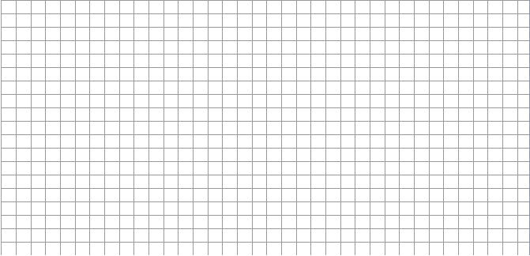
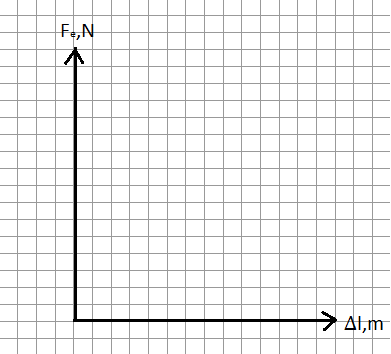
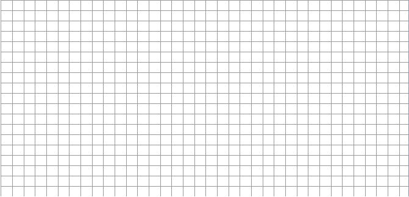
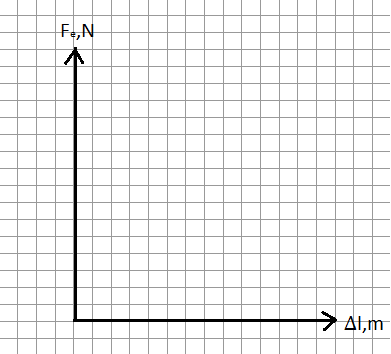

Studiul pendulului elastic şi determinarea constantei de elasticitate a unui resort.
Scopul lucrării:
Să se determine constanta elastică a unui arc, să se verifice legea deformărilor elastice.
Materiale necesare:

Consideraţii teoretice:


G=m*g
∆l(alungirea-delta l) se va afla din diferenţa dintre l1(lungimea resortului deja alungit) şi l0(lungimea iniţială a resortului)-formula(2)
K(constanta de elasticitate) se va afla din raportul forţei de greutate(m*g) supra alungirea(∆l)-formula(1)
*În această lucrare se va verifica justeţea relaţiei Fe=k*x. Dacă această este valabilă atunci k trebuie să fie constant.
Modul de lucru:
1)Suspendaţi de capăt un corp cu masa de 100g, marcaţi poziţia şi măsuraţi alungirea resortului ∆l(cu cît s-a alungit).

2)Repetaţi pasul 2 încă de două ori, schimbînd de fiecare dată masa.

3)Calculati alungirea(∆l) pendulului pentru fiecare caz dupa formula (2).
4)Înscrieţi valorile alungirilor în tabel şi calculaţi forţele de greutate mg pentru fiecare experiment.
5)Calculaţi constanta elastică (K) pentru fiecare caz.
6)Calculaţi valorile medii necesare.
7)Aflaţi erorile şi sursele potenţiale de erori.
8)Trasaţi graficul dependenţei forţei elastice(Fe) si alungirii(∆l), apoi trageţi concluzii.
Tabelul măsurărilor şi determinărilor:
| Nr. |
∆l,m |
m,kg |
G,N |
K,N/m |
∆K |
ε,% |
| 1 |
|
|
|
|
|
|
| 2 |
|
|
|
|
|
| 3 |
|
|
|
|
|
| 4 |
|
|
|
|
|
| Valori medii |
|
|
Calcule:
 



Concluzii:
____________________________________________________________________________________________________________________________
____________________________________________________________________________________________________________________________.
Întrebari de verificare a cunoştinţelor:
1)Compară valorile obţinute a constantei elastice(K) cu valorile ei tabelare.
2)Ce ecuatie rezultă din legea II a lui Newton?
3)Cum depinde forţa elastică(Fe) de alungirea resortului(∆l)?